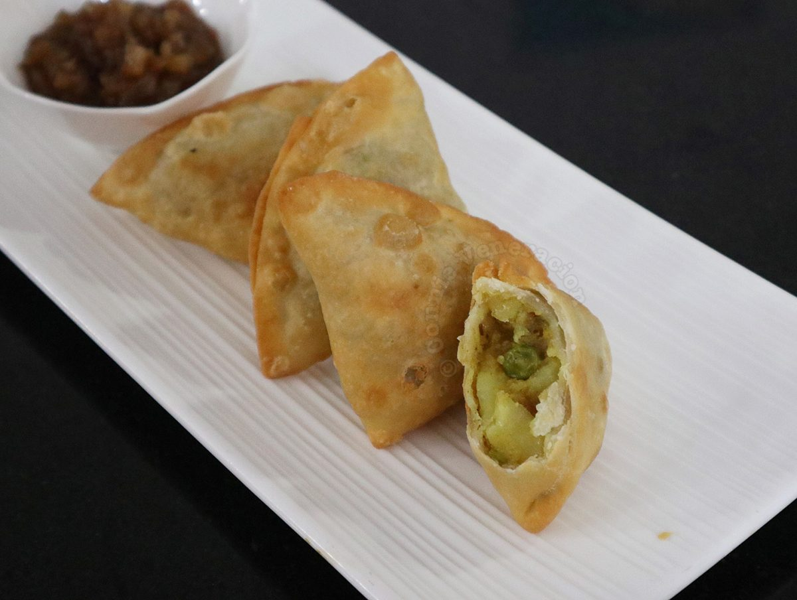
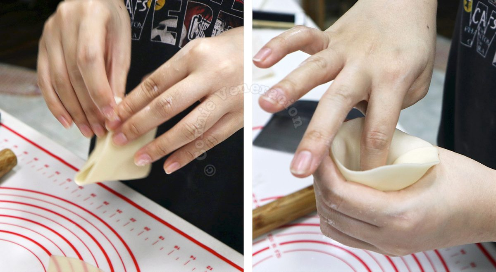
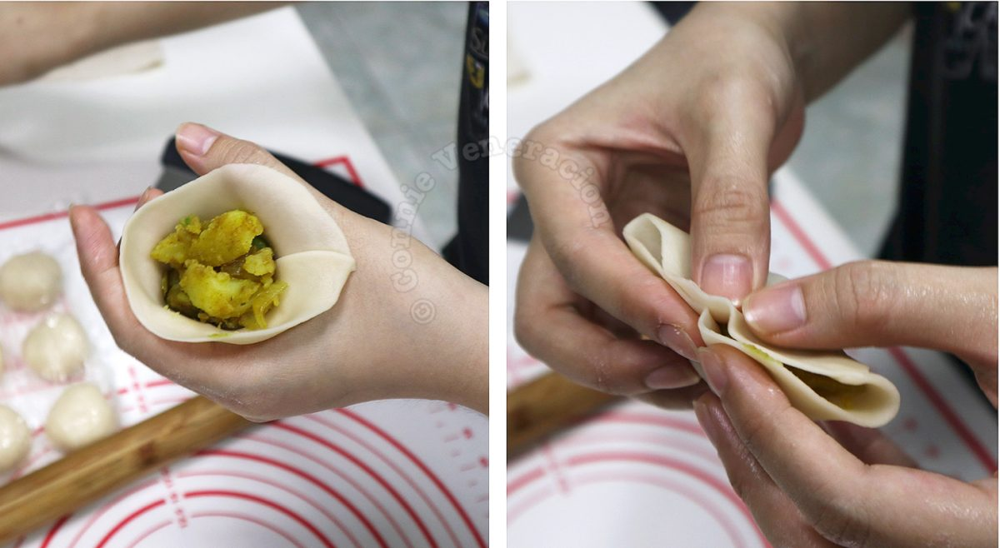

Samosa Recipe

Fried dumplings served as appetizer or snack that originated in Middle East and is most commonly associated with Indian cuisine.
Although there are many regional variations, today we will be making crispy samosas with spicy potato and pea filling.
This recipe takes around 2 hours and serves 16 samosas.
Ingredients required
For the filling
- 1 teaspoon coriander seeds
- 2 tablespoons palm oil
- ¼ cup finely chopped onion
- ¼ teaspoon cumin and ginger powder
- 1 and 1/2 cups of peeled, boiled and cubed potatoes
- ⅓ cup fresh peas
- ¼ teaspoon chili flakes
- pinch of black pepper
- salt to taste
Samosa shell
- 1 cup all-purpose flour
- ¼ teaspoon salt
- ⅛ teaspoon baking powder
- ¼ cup palm oil
- ¼ cup water
To cook the samosas
Steps for cooking
Make the filling
- Heat a frying pan. Dry fry the coriander seeds until fragrant. Cool and pound using a mortar and pestle.
- Heat the palm oil in the frying pan. Saute the onion with the coriander seeds, cumin and ginger powders until the onion bits are softened.
- Add the potato cubes. Cook over high heat until the potato cubes are lightly browned in parts.
- Off the heat, stir in the peas.
- Season the filling with chili flakes, pepper and salt.
- Cool at room temperature for 30 minutes.
Make the shell
- In a bowl, whisk together the flour, salt and baking powder.
- Cut the shortening into small pieces and add to the flour mixture.
- Using your fingers, rub the shortening with the flour mixture until the texture resembles uncooked oatmeal.
- Pour in the water, a third at a time, while mixing the dough with your hand.
- When all the water has been poured in, gather the dough into a ball and transfer to the work surface. Knead for five minutes until lightly elastic.
- Wrap in cling film and leave to rest at room temperature for at least half an hour.
Assemble and fry the samosas
- Unwrap the dough and form into a log. Cut into eight equal portions.
- Using a rolling pin, flatten a portion of the dough into a circle about an eighth of an inch thick.
- Cut the rolled dough into halves and repeat with the rest of the dough.
- Take a piece of dough and shape into a cone.

- Drop a heaping tablespoon of filling into the shaped dough and pinch the edges to seal (dabbing a little water on the edges makes sealing easier).

- Cover the uncooked samosas with a damp kitchen towel and allow to rest for 10 to 15 minutes.
Deep fry the samosas
- Heat the palm oil in a wok to 320F.
- Fry the samosas in batches to avoid overcrowding.
- The samosas are done once golden brown in color.